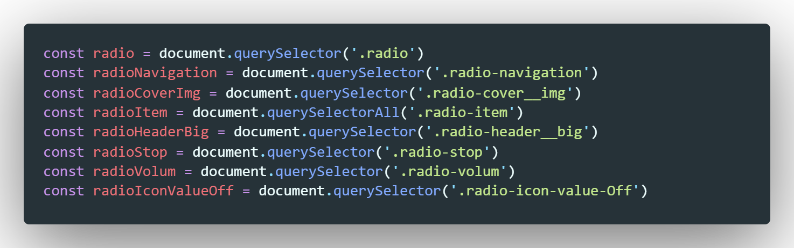
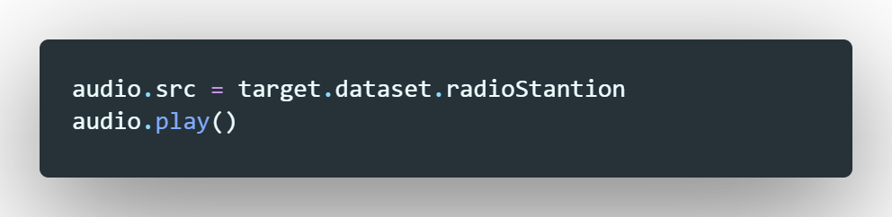

Вся верстка делится на две части, на контейнер с радио и на секцию с кнопками паузы-запуска, там же находится регулятор громкости. Начнем с самой массивной верней части с контейнера который содержит в себе радио (условно)
Контейнер так же разделен на две части. Первая часть - радио-плеер
Здесь все просто: блок с картинкой и блок с названием радиостанции
Теперь рассмотрим вторую часть. Здесь у нас форма со списком UL
Рассмотрим содержимое li

Здесь важно то, что содержимое li мы оборачиваем в label. Но к этому мы еще вернумся. Посмотрим что же внутри:
Первое это блок внутрь которого помещаем картинку. Затем к этому блоку будем применять стили (добавлять класс active)
Далее идет тег input c типом radio (radioButton) этому тегу мы указываем свойство name. Т.к. у всех элементом li будет input (type='radio') и у всех будет name одинаковое, то нельзя будет активировать несколько inputov одновременно. Через это и будет осуществляться переключение каналов радио. Так же input мы создали data атрибут и в него записали URL потоковой передачи радиостанции
Ну и наконец добавили span - который содержит название сранции.
Теперь вернемся к label. При помощи стилей мы скрыли кнопку radio и теперь так как мы все обернули в label, все что внутри label будет реагировать на клик и все это будет влиять на radioButton
Рассмотрим последнюю часть верстки
Все что здесь нас интересует это кнопка radio-stop, так как все остальное относится к регулировке громкости. Там все тоже самое что и у видео. Поэтому повторно это разбирать не буду.
Как обычно начинаем с объявления переменных что бы получить доступ к элементам DOM дерева
Далее мы должны объявить новую переменную в которую поместим результат вызова конструктора Audio
После этого надо нашему новому объекту указать тип
audio/aac - говорит о том, что объект audio теперь является radio плеером
Теперь нам надо что бы при открытии страницы кнопка RadioStop была не активна, так как мы только открыли страницу и останавливать нам еще нечего
Теперь напишем функцию, которая будет изменять иконку на кнопке
Если наше радио на паузе тогда добавляем кнопке класс fa-play (появится иконка play). Здесь же удалится иконка stop блоку radio добавится класс play c помощью которого картинка с логотипом радио начнет крутиться (анимация через CSS)
Иначе - делаем все в точности наоборот
Еще один косметический код, который при нажатии на radio-кнопку будет добавлять к элементу списка li еще один класс, который добавляет серый ободок выбранной станции
Так как список ul содержащий radio-кнопки находится внутри тега form - radioNavigation мы можем на нашу форму повесить слушатель на событие Change, это событие срабатывает каждый раз когда в форме что-то меняется, radio-кнопку переключили, выпадающий списко вызвали и поменяли значение - все это вызывает событие:
Функция которая будет вызываться при событии имеет входной параметр event. Первое что мы делаем это получаем элемент таргета (т.е. по каком уэлементы мы кликнули). Далее мы обращаемся к элементу таргета и применяем к нему метод closest. Что делает этот метод? он поднимается на верх по иерархии вложенности dom дерева и ищет элемент верстки класс которого совпадает с классом который мы задаем входным параметром методу. В нашем случае - это radio-item. этот элемент мы помещаем в переменную parent
Далее мы вызываем функцию selectItem и на вход даем ей наш элемент который помещен в parent и с помощью функции этому элементу добавляется класс select
Следующий три строчки изменяют такст и картинку на верхнем блоке
Теперь как же запускается радио:
Мы обращаемся к свойству src нашего объекта audio (радио) и помещаем в него значение data атрибута radio кнопки
После чего обращаемся к объекту audio и вызываем у него метод play()
После вызываем функция для смены иконки
Рассмотрим код который мы повесили на слушатель клика на кнопку stop
Тут все просто если радио поет значит его на паузу, иначе применяем метод play. в конце добавляем функцию по смене ионки кнопки